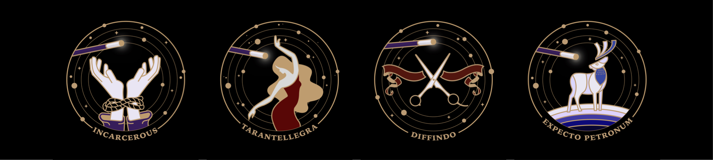
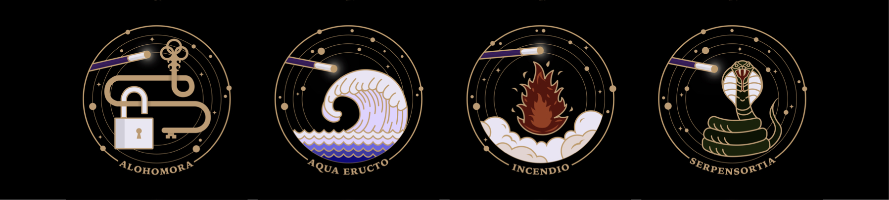
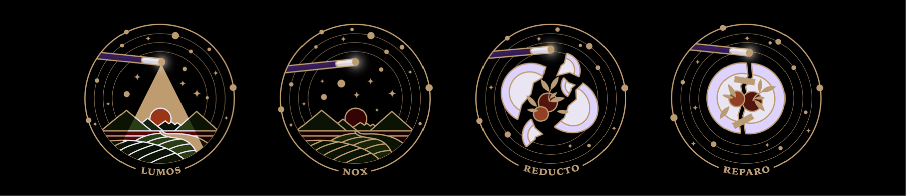
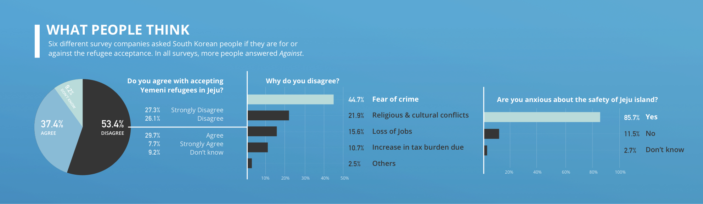
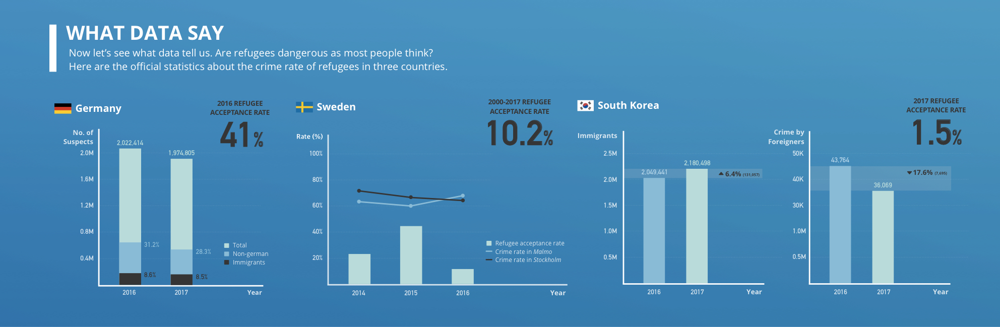
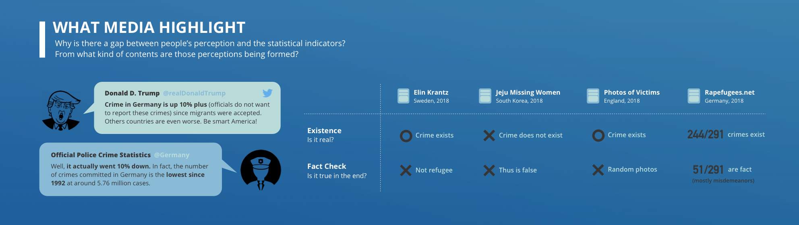
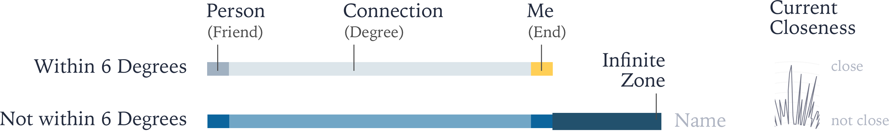

-
Project 1
Magic Spells All Muggles are Jealous of
Topic. Twelve variations of magic spells that appear in Harry Potter series.
Ideation. When I was young, I used to draw up a list of magic spells whenever I was reading Harry Potter. Some of them were so frequently cited that I remember them even now. Among a number of spells, as the title implies, I tried to avoid selecting deadly spells such as the three unforgivable curses—Avada Kedavra, for example, kills the target. Instead, selected spells are the ones that are comparatively peaceful and trivial but useful. This also accords with the theme of this assignment—my favorite things—since deadly curses are definitely not my favorite, though the magic itself and Harry Potter series are.
Details. The following shows more detailed information about each spell:

1. Incarcerous - Ties someone or something up with ropes.
2. Tarantellegra - Makes victim dance uncontrollably, recalling the tarantella dance
3. Diffindo - Rips, splits, divides or otherwise physically damages the target.
4. Expecto Petronum - A defensive spell which will conjure a spirit-like incarnation of their positive emotions to defend against dark creatures. Harry Potter’s Patronus takes the form of a deer.
5. Alohomora - Used to open and unlock doors.

6. Aqua Eructo - used to create, and control, a jet of clear water.
7. Incendio - Produces fire.
8. Serpensortia - Conjures a serpent from the spell-caster’s wand.9. Lumos - Creates light that shines from the wand’s tip.
10. Nox - Turns off the light produced by Lumos.
11. Reducto - Blast solid objects into pieces.
12. Reparo - Used to repair objects. A good counter-curse of Reducto.
Theme. Searching for some prior examples depicting the magical things, I realized that many people used stars to give the enchanted feeling. Accordingly, I first thought of mapping each spell to a constellation in the night sky. However, it was difficult to simplify and describe vividly the constellations at the same time. Thus, I chose starry gold borders with dark background in order to vivify the magicalness of each icon. The circular borders around which stars are revolving serve as a key to consistency among the multiples. Less than ten colors were used, most of which can be classified into one of blue, red, gold, white, and green. All of them were toned down and darkened to some extent in order to give consistency in the color usage.
-
Project 2
Are Refugees Dangerous?
The topic of my project was refugees, more specifically the Yemeni muslim refugees coming to Jeju island in South Korea. To narrow down the scope of the topic, I tried to put emphasis on the question if the refugees are dangerous and likely to be involved in a crime in particular. I didn’t explicitly answer the question, but instead tried to focus more on delivering the data itself so that the reader wouldn’t feel that they are being forced to be on one side. One example is the case of Sweden in which I showed both increasing and decreasing crime rate due to accepting refugees. This implies that the number of refugees have nothing to do with crime rate, showing neither positive nor negative correlation.
I spent a lot of time on searching for the factual data—I even read the German official police report using Google translation in order to keep the objectivity using the rawest data. Because of this, the resulting infographic was less visually engaging, and sometimes even misleading due to wrong usage of visual devices.
To improve such drawbacks, I made several changes, such as increase in the overall font size, to my infographic considering the feedbacks I got from last Monday’s studio. More details about the changes can be found in the second question of the reading assignment 2.
The infographic first points out what the people think about the refugees, which has also been a motivation for this project. Then, it points out how crime rate of refugees or foreigners are not so different with other people, giving example of Germany, Norway, and South Korea. Lastly, it suggests that maybe the reason for the difference between people's perspective and what data really says is partially because of what media highlights.
-
Project 3
Six Degrees of Jaeyoon Song
About. I collected data of my friends at Facebook, friend lists of those friends, friend lists of those friends of friends, and so on—only up to 6 times. With this data, I found the shortest path within six degrees that starts from my direct friends and comes back to me on Facebook. Also, I collected data of recent closeness by combining the number of mentions each friend is mentioned in my recent SNS notifications with my subjective closeness. My intention was to briefly check the following two things: (1) Does the concept of “six degrees of Kevin Bacon” also apply to my relationships on Facebook? (2) Does the shortest path have any relationship with recent closeness? The answer for first question was most of the times, since there were several exceptions. For second question, the answer was definitely yes, since there was high correlation between recent closeness and the degree in the shortest path. Personally, I thought that my relationships are relatively distributed, because with the other person’s data, I believe the results might have been much simpler ending up with only two or three degrees.
How to Read. Each line coming straight out from the center of the circle represents my direct friend who is one degree away from me. The innermost part of the circle is recent closeness visualized as a line graph. Then, the innermost node refers to the friend of my friend, not my direct friend. So if the number of degree is 2, the path is ‘my friend - friend’s friend - me’. If the path was found within six degrees, the vertices and edges were colored gray, whereas if not, the vertices and edges were colored blue—the vertices of me myself were colored yellow. The dark blue zone corresponds to an infinite zone implying that the connection didn’t come back to me yet.

Implementation. For implementation, I used d3.js, which was also introduced in class by Professor Hong. Since d3.js is easily used together with web standards, I made an interactive version—nothing special except for tooltips, export function, and the buttons to check the small multiples—on web as the photo above. You can check it here
Limitations. There were some limitations in data collection, due to Facebook policy not letting the external developers to export the friend list. Therefore, I had to export only the ones whose friend list was public, which may have brought difference in results.